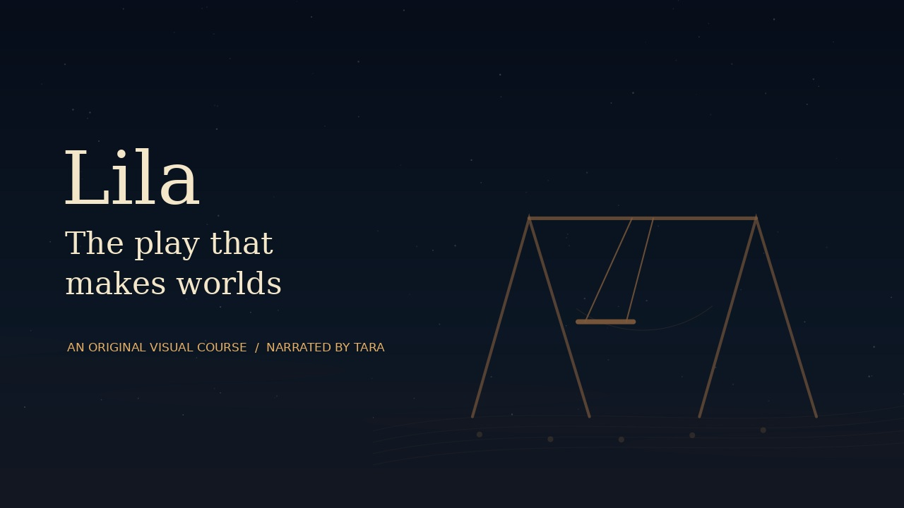

Lila: The Play That Makes Worlds
Brahman's sport, the child at the board, and the art of playing.
Why does play exist at all? From a playground to the Brahma Sutras, Plato, Heraclitus, Krishna's games, the dance of Shiva, Schiller and Nietzsche. A course about play without a reason, suffering with real consequences, and why recognition cannot be an alibi.
Selected source readings and an original comparative argument, not a claim that these traditions teach one doctrine. The strongest objection gets its own hearing: no one may tell another person that their pain is merely a game.
Chapters
- 00:00 - The strangest thing on earth
- 03:37 - The scandal of the sutra
- 07:59 - The king's game of balls
- 10:24 - The question the text asks itself
- 14:01 - The playthings of God
- 16:38 - The child at the board
- 19:21 - The butter thief
- 24:51 - The dancer in the hall of fire
- 29:55 - The Germans take play seriously
- 35:05 - How to play
Sources and complete script
Source, edition, rights and audio notes
Complete spoken script
Rights and narration
Historical translations credited in the narration and source notes; brief Heraclitus quotations credited to Great Library Project under its explicit invitation to quote with citation. Our original commentary and original symbolic animation may be reused under CC0. Third-party rights remain separate: no blanket CC0 license is asserted for this combined episode or its audio. No source scans, museum pictures or music are included.
AI narration in the Aoede voice. Sanskrit and specialist names use machine pronunciation and may be approximate. Full automated wording comparison and targeted audio checks, not a full human-ear certification. Public MP3 at 128 kbps. Gain and transparent true-peak limiting only, no speed or pitch changes. -17.91 LUFS, -1.75 dB true peak.
Free listening without ads, paid access, sponsorship or support solicitation.
Got a question? Ask Tara - the best listener questions become short answer episodes.
Searchable transcript
Auto-generated pilot, 21 November 2026. This is a selection of ten courses, not a top-ten listening chart. Open-source Whisper recognition, with term-spelling checks and targeted rechecks. Timestamps are approximate. [?] marks a reading to check against the audio before quoting. This is not a certified verbatim transcript or a new translation.
Text · WebVTT · Corrections and uncertainties · Prepared script · Source credits and rights
The source and translator rights stated for this episode apply here too. No new blanket CC0 grant is made.
Watch a playground for five minutes. Really watch it. And you will see the strangest thing on Earth. Children are running. Not from anything, not toward anything. They are running in order to run. One of them is IT, which is a disaster. And being IT is the engine of the whole game. So the disaster is delighted in.
A dog tears across the grass after a stick that nobody needed fetched. The dog knows, by the way. Watch the play bow. The front legs down, the hind quarters up. That posture is the dog's way of saying, what happens next is play. And it matters intensely. Out beyond the playground, there are dolphins riding the bow waves of ships. You may have seen the videos of crows on snowy rooftops, sliding down the slope on a plastic lid, climbing back up, sliding again.
To a human watching, the crow looks as if it is sledding. Now, the textbooks have answers for this. And some of them are good answers. Play is practice. The kitten stalking the shoelace is rehearsing the hunt. The rough and tumble of kids is training the social brain. Play is experimentation in a safe sandbox. Play burns off surplus energy. Fine.
But notice something about every one of those explanations. They all treat play as a means to something serious. The fun is a trick. Bait, laid by evolution so the real work gets done. And the trouble with that story is that play keeps overflowing it. An adult human being, fully fed, fully safe, with no hunt to rehearse, will still stay up past midnight moving pieces of cardboard around a table and call it one of the best nights of the month.
The rehearsal is over. The plane is not. Whatever play is, it is not exhausted by its usefulness. There is something in play that is for its own sake. And you may feel this when a hobby becomes paid work. Something can change when the activity acquires an external purpose. So here is the live question of this course. And it gets stranger as we go. [?]
Why is there play at all? Not why do children play or why do animals play, but why does the universe contain this bizarre category of activity? Activity that does nothing, achieves nothing, and is somehow the thing we would least want to live without. A few of the greatest minds our species has produced gave an answer so extreme that most people who hear it assume they are joking.
They said, play is not an accident inside the universe. Play is what the universe is. The whole of it, the galaxies and the sea slugs, the birth and the death and the falling in love is a game, a dance, a sport. Being played for no reason whatsoever by the only thing that could afford such extravagance. The absolute itself. The Sanskrit word for it is Lila.
Play. Sport. The divine pastime. This course is the case for that word. From the texts that staked everything on it. and the case against the cheap version of it, which the same texts understood better than anyone. By the end, we will have to answer a hard question. If all this is play, why does it hurt? And we will land as a previous course on this feed landed on the one move that makes the game bearable and beautiful at once.
But start here with the playground. Hold the image of the child running for no reason. Several of the texts we are about to read invite a startling comparison between that image and divine activity. The single most shocking sentence about play ever written sits in the middle of what is, to all appearances, the driest book in Indian philosophy. The book is the Brahma Sutras, sometimes called the Vedanta Sutras, attributed to the sage Badarayana, compiled in the early centuries of the common era.
It is the foundation document of Vedanta, the tradition that tries to systematize the Upanishads. And it is written in a style that makes tax law look chatty, about 550 aphorisms. Some of them, two or three words long, each one a compressed knot that whole libraries of commentary exist to untie. The second chapter defends the claim that Brahman, the absolute, is the cause of the world.
And about a third of the way in, in George Thibaut's old public domain translation, the text raises an objection against itself. Sutra 2.1.32. Brahman cannot be the creator, because in Thibaut's rendering, action as we know it always has a motive. Here is the objection in plain language. We know what intelligent action looks like. People act for reasons. Nobody, the commentary says, engages even in an unimportant undertaking, unless it serves some purpose of their own, let alone a weighty one.
And creating a universe is on any accounting, a weighty undertaking. So either Brahman had a purpose, some lack, some need, and then Brahman is not complete, not self -sufficient, and the whole doctrine collapses. Or Brahman had no purpose, and then there should be no action at all, and no universe. Motive or motion. Pick one. You could not have a perfect, fully satisfied being, who also does things. [?]
It is a genuinely good objection. It is, if you think about it, the objection every child raises. If God is happy, why did he bother? And the next Sutra answers with a short Sanskrit phrase, Lokavat tu lila Kaivalyam. Thibaut renders it, but Brahman's creative activity is mere sport, such as we see in ordinary life. Sit with what just happened.
The driest book in the tradition, at the tightest point of its hardest argument, reaches for the one human activity that has no purpose at all, and says, that, the cosmos is that. Not a machine, not a trial, not a school, not a punishment, a sport. Shankara, the great eighth century commentator, spells it out. In ordinary life, he says, we see that certain doings of princes or other men of high position who have no unfulfilled desires left proceed from mere sportfulness.
As, for instance, their recreations in places of amusement. And then he reaches for an example, I find quietly astonishing. Breathing. The process of inhalation and exhalation, he writes, is going on without reference to any extraneous purpose, merely following the law of its own nature. Your breath right now is not a project. It does not have goals. It moves because moving is its nature.
Creation says Shankara is like that. The activity of the Lord also may be supposed to be mere sport, proceeding from his own nature without reference to any purpose. And then the line that every lover of this text memorizes. Although the creation of this world appears to us a weighty and difficult undertaking, it is mere play to the Lord whose power is unlimited. To you, a universe is heavy.
To the infinite, it is a game of catch. The weight is not an argument against the play. The weight is exactly what unlimited power feels like from inside the playground. Now, honesty requires the rest of Shankara's sentence because he is subtler than the bumper sticker. At the end of the same passage, he adds a caveat. The scriptural doctrine of creation does not refer to the highest reality.
It refers to the apparent world only, the world of names and forms. Meaning, in the final analysis, Shankara does not think the absolute does anything at all. Lila, for him is the best available description of how the world looks from inside the world. From the highest seat, nothing ever happened. Keep both hands on that. The play is real enough to be the right word and provisional enough that the sage will not sign the deed.
We will come back to that move because it turns out to be the oldest version of the ending of this course. Three centuries after Shankara in the temple towns of South India, another giant took up the same sutra and read it with completely different eyes. And the fact that they disagree about almost everything makes their one agreement blaze. Ramanuja, the 11th century master of qualified non dualism, does not believe the world is appearance.
For him, the world is real. Souls are real. God is a person and devotion to that person is the path. He and Shankara are the two poles of Vedanta and their schools have been arguing for 900 years. But here is Ramanuja on the same short phrase in Thibaut's translation. The motive that prompts Brahman, all whose wishes are fulfilled and to his perfect in himself to create a world of sentient and non sentient beings is nothing else but sport play. [?]
And his example is even better than Shankara's princes. We see in ordinary life how some great king ruling this earth with its seven dweepas, that is the continents of the old geography, and possessing perfect strength, valor, and so on, has a game at balls, or the like, from no other motive than to amuse himself. Hence, there is no objection to the view that sport only is the motive prompting Brahman to the creation, sustentation, and destruction of this world, which is easily fashioned by his mere will. [?]
A game at balls. The maker and unmaker of worlds, compared by one of the most revered theologians in history, not to a judge, not to a clockmaker, not to a king on campaign, but to a king on his day off, knocking a ball around the courtyard because it is delightful to knock a ball around the courtyard. And notice what the agreement tells you. These two men disagree about the nature of reality itself, and both of them reading the same sutra, except without flinching that the highest thing there is, acts the way an unbothered person plays a game. [?]
The play is not a scandal to be managed. It is the answer. The point where the argument against God runs out of road is exactly the point where play begins. That is the Indian foundation. But before we tour the rest of the world on it, the text itself deserves the floor, because it immediately asks the question you are already asking. It is one thing to say, the universe is a game.
It is another thing to say that in a children's cancer ward. And the Brahma sutra's to their credit go there next in their own dry way without flinching. The very next sutra, 2.1.34, intibos rendering, inequality of dispensation and cruelty the Lord cannot be reproached with on account of his regarding merit and demerit, for so scripture declares. [?]
Behind the brackets is the objection that should occur to every honest reader of the Lila doctrine. Shankara gives it full force, better than most modern atheists manage. If the Lord made this world, then the objection runs, the reproach of inequality and cruelty attaches to him. Some beings, the gods and others, he renders eminently happy. Others, the animals, eminently unhappy.
To some, human beings, he illots an intermediate position. To a Lord bringing about such an unequal condition of things, passion and malice would have to be ascribed, just as to any common person acting similarly. And since the infliction of pain and the final destruction of all creatures form part of his arrangement, he would have to be taxed with great cruelty, equality abhorred by low people even. [?]
Do not skip past that last phrase. Even coarse people, the commentary says, despise cruelty. The text is not naive about what the world contains. It has looked at the food chain. It has looked at the graveyard. It says, if God is directly responsible for the distribution of joy and agony, God has a problem that no amount of omnipotence dissolves. And the answer given is karma.
The Lord, the commentary says, is not the author of the inequality. He is bound by regards. He has to look to merit and demerit. His position is like that of the rain. The rain is the common cause of rice, barley, and every other crop. But the differences between the crops come from the differences in the seeds. The Lord gives the world what grows in it, each being's portion, comes from the being's own prior action.
Push once more, says the objector. Before the first creation, there were no deeds, so the first distribution must have been arbitrary. In the Sutra's answer, there was no first creation. The transmigratory world is without beginning. Merit and inequality, says Shankara, are like seed and sprout, caused as well as causes, round and round with no first link.
Now, you may find that answer profound, and you may find it evasive. And the tradition itself contains people on both sides. The Buddhists, notably, kept the karma and dropped the Lord altogether, which is its own statement about how well the reign analogy works. This course will not settle it. What I want you to see is the structure, because it matters for everything that follows. [?]
The lila doctrine is not the claim that suffering is unreal or that cruelty does not matter. The text that calls the universe sport is the same text that forces itself to face the charge of cruelty openly, one sutra later, and that builds its answer out of the moral seriousness of action. What you do matters endlessly, all the way down.
Play in this vision is not the opposite of moral weight. The game has real stakes, stakes as long as time, which is exactly why the doctrine needs karma as its conscience. Hold that structure. Total play, total stakes. Every tradition in this course will need it. And at the end, it is what separates the great version of this teaching from the contemptible one.
Now West, and back in time, to an old man in Athens, writing his last book, Plato's Laws is the work of the very end of his life, a long, strange, half -weary conversation about how a city should be ordered, and buried in Book 7 in Benjamin Jowett's public domain translation is a passage that reads like nothing else in Plato. The Athenian stranger has been laying down rules for education, and suddenly he stops and confesses something.
Now, human affairs are hardly worth considering in earnest, and yet we must be in earnest about them. A sad necessity constrains us. Read that twice, because both halves are load -bearing. Human affairs are not worth ultimate seriousness, and we cannot help taking them seriously. Both, at once, as a necessity that the old man calls sad. That is as honest a sentence as any philosopher ever wrote about the human condition.
Then he says, why God is the natural and worthy object of our most serious and blessed endeavors for man, as I said before, is made to be the plaything of God. And this truly considered is the best of him. Wherefore also every man and woman should walk seriously and pass life in the noblest of pastimes. The plaything of God. And here the turn he gives it, that is the best of him. [?]
Not the humiliating truth about man, the best truth. Because if you are a plaything, then the question of your life is not what you are for, as if you were a tool. Tools are for things. Playthings are not for anything. The question of your life is what game you are in, and whether you are playing it nobly. And what is the noble way to play? The passage continues. And it is not what this turn Plato of the Republic would have said. [?]
We ought to live sacrificing and singing and dancing, the stranger says. And in this way, a man will propitiate the gods and defeat his enemies. The curriculum of a serious life is worship, song, and dance. And then the kicker, one of my favorite phrases in all of Greek philosophy, we go forward, he says, being for the most part puppets, but having some little share of reality.
For the most part puppets, some little share of reality. In my comparative reading, Plato suggests attention. We can place beside Indian accounts of concealment and grace, mostly played partly player. That is an analogy, not a claim that their doctrines are the same. The puppet strings are real. The little share is real too. Everything in this course and everything in the spiritual life it describes lives in that little share. [?]
Well, before Plato, another Greek had already offered a startling version of it in a single line, and then vanished from history, leaving nothing but riddles. Heraclitus of Ephesus, around 500 years before the common era, the philosopher the ancients called the Obscure, wrote one book, and it survives only in fragments. A hundred and some sentences quoted by later writers who were usually arguing with him.
Fragment 52, preserved by Hippolytus, in the interlinear rendering of the Great Library Project, which invites quotation with citation. Aeon is a child plain, plain droughts. The kingship is a child. Aeon, the age, the span of time, the lifetime of the cosmos. The whole of time, Heraclitus says, is a child at a board moving pieces, and the kingship, the rule of everything, belongs to the child. [?]
Notice there is no adult in the fragment, no parent supervising the game, no referee, no purpose the game serves. The child is not playing toward anything. The kingship, the actual sovereignty over what happens, is the child's. That is a thought so radical that 25 centuries of theology have mostly declined to think it. The buck stops with play.
And hold it next to his other famous fragment, 53, because Heraclitus is never cozy. War is the father of all and king of all. Strife, opposition, tension is what brings things forth and sets them in their places. The child at the board is also the father of all, and his name is conflict. Put the two fragments together and you get something that sounds impossible until you have watched children play a board game, at which point it sounds exact.
The game needs the struggle. The pieces push against each other. That is what playing is. The Strife is not an interruption of the game. The Strife is the game. And the game is not an excuse for the Strife. Nobody plays in order to fight. The fighting is what the plane feels like from where the pieces sit. We are the pieces. From our seat on the board, it is war. And Heraclitus honors that. [?]
He's not telling you your war is imaginary. From the seat the fragment invites you to imagine, it is a child at play. And the child is not being cruel. Both are true at two different depths. And the whole contemplative life, one might say, is learning to hold your seat and the child's seat at the same time. That is my reading, labeled as mine. We will use that two seats image to test the texts that follow, without assuming they all teach the same thing. [?]
If Lila has a capital city, it is not a library. It is a cowherd village on the Yamuna River and its king steals butter. The Bhagavata Purana, a medieval Sanskrit text, perhaps a thousand years old, is the great scripture of Krishna devotion. And its tenth book is central to many Krishna devotional traditions. The story of Krishna's childhood among the cowherds of Vraja.
And the thing a first time reader cannot get over is that the infinite God spends the book playing. Not performing useful miracles with a few games on the side, playing. There is a passage in book 10, chapter 12, that I want to read to you at length because nothing I could say about it beats it. The translation is S. Subba Rau's, from 1928, public domain. The cowherd boys have gone into the forest with Krishna, and the narrator, the sage Shuka, describes what they do.
Some play upon the flutes, some blow their horns, some hum with the humming bees, and some others sing sweet notes along with cuckoos. Some run with the shadow of birds, with the royal swans, some walk. Some others sit down with cranes, and some too with peacock's dance. Some pull monkeys by their tails and climb trees along with them. Some make rye faces after them, others swing from branch to branch. [?]
Some hop with frogs and get drenched in the rivers and rills. At their own reflections, some laugh. Some admonish their echoes. Some admonish their echoes. That may be the purest description of childhood ever written. And then comes the verse that the tradition itself treats as the whole theology of play in one sentence, verse 11. Possessed of an immense store of merit, they sported thus with Sri Krishna, who was to the wise the realization of perfect and absolute blissfulness of Brahman, supreme deity to those that gave themselves to his service, and but a human child to those that were deluded [?]
by Maya. Unpack it because the structure is precise, and it is the same two -seat structure Heraclitus gestured at, now with a third seat added. The same boy is three things at once, depending on the depth you look from. To the philosophers, the meditators, he is the bliss of the absolute itself. To the devoted, he is the highest God to be served. [?]
To those under Maya, illusion, he is just a kid. And the cowherd boys, the text says, are the most fortunate beings in creation, heaps of accumulated merit, because they get to play with him as equals, grabbing at his lunch bag and dunking him in the river, In the playful reading I am proposing even a water fight can become an image of intimacy with the absolute.
The next chapter makes the point cosmic, and gives this course its title image. It is called, in the tradition, the Brahma -Vimo -Hana -Lila, the play of bewildering Brahma. Brahma, the creator God, the four headed engineer of the universe, has been watching from the sky. In Subba Rau's rendering, eager to enjoy another delightful work of his glorious power. And he carries off the calves and the cowherd boys and hides them to see what Krishna will do.
What Krishna does is become them. For a year, every missing calf and every missing boy is Krishna himself, wearing their forms, drinking their milk, being kissed by their mothers. The creator God hid the pieces, and the board quietly replaced them all with the player. When Brahma finally looks again, he cannot tell the world from God, and he falls down dazed and is folded into worship.
The creator himself, the text is saying, does not know the whole game. Even he can be made a piece in it. Even his bewilderment is one of the moves. Lila is bigger than any player's knowledge, including the builder of the board. And the Vishnu Purana, in H. H. Wilson's old public domain translation, gives the doctrine in a single line of dialogue. The cowherds have watched Krishna lift a mountain like an umbrella, and they confront him.
This is very astonishing child's play, unsuitable to the condition of a herdsman, and all thy actions are those of a God. Child's play, they call the miracle. They haven't exactly backwards, and exactly right. The miracle is child's play. That is what a miracle is in this vision. What unlimited being does instead of work. The same book ends the cycle with the rasa dance, the autumn night when Krishna, who felt inclined to join with the gopis in sport, multiplies himself among the cowherd girls, so each believes she dances with him alone. [?]
And the women, in his absences, wander the forest acting out his deeds. One crying, I am Krishna, behold the elegance of my movements. Another calling that she has lifted the mountain for their shelter. And, in Wilson's lovely phrase, beguiled their sorrow by mimicking his sports." And Wilson's closing note on the chapter states the metaphysics plainly. The illimitable being assumed the character of a youth amongst the females of the herdsmen of Vraja, pervading their natures and that of their lords by his own essence all diffusive like the wind.
For, as in all creatures the elements of ether, fire, earth, water and air are comprehended, so also is he everywhere present and in all. Devotion in this tradition is not leaving the playground, it is joining the dance. An imitation, the girl's plane at being Krishna, turns out to be a spiritual practice. Playing God is the road to him, provided you know it is playing. [?]
That proviso is everything. And chapter 10 is about it. There is a bronze you have seen, even if you have never been to India. A figure dancing inside a ring of flame, hair flying, forearms in motion, one foot raised, one foot planted on a small crumpled creature. Shiva Nataraja, the lord of the dance. Chola dynasty bronzes of this form are held in major museums and the image is widely recognized beyond India. [?]
In 1918, the art historian Ananda Coomaraswamy published an essay, The Dance of Siva, that remains the best short guide to what the bronze says. And it is public domain, so let me walk you through the statue the way he does. One right hand holds a small drum. The other right hand is raised, palm out, in the gesture that means do not fear. One left hand holds fire, the other points down toward the raised foot.
Under the planted foot lies the dwarf, around it all the ring of flame. The meaning in the Tamil Shaiva texts Coomaraswamy quotes, is stated outright. Our lord is the dancer, who, like the heat, latent in firewood, defuses his power in mind and matter and makes them dance in their turn. The dance, Coomaraswamy explains, represents the gods five activities, the panchakritya, And here is the list, because this course has met it before, in the Safeword course, and it is the theological heart of everything. [?]
Creation, preservation, destruction, tirobhava, and grace. Creation maintenance dissolution, those three you expect. The fourth is the one that stops you. Tirobhava, in Coomaraswamy's gloss, veiling, embodiment, illusion, and also giving rest. Concealment, hiding. One of the five eternal acts of God is covering his own tracks, dimming the lights, making the world forgettable and forgot, making you forget that you are him.
And the fifth, anugraha, grace, release, is the unveiling, the lifting of the foot, that grants refuge. A text called the Unmai Vilakkam assigns each act to a part of the image. Verse 36 in Coomaraswamy's rendering, creation arises from the drum. Protection proceeds from the hand of hope. From fire proceeds destruction. The foot how the loft gives release. [?]
And the fourth hand, the one pointing down, points to the lifted foot, the refuge of the soul. So read the statue as a sentence, the drumbeat of creation, the upheld hand of protection, the flame of destruction, the foot that is your way out, and underneath it all held down but not destroyed, the dwarf. The Metropolitan Museum identifies the small figure under the right foot as apasmara purusha, associated with illusion, Apasmara.
forgetfulness personified, the God dances on forgetfulness. In my reading of the image, ignorance is restrained rather than given the last word. Connecting that to the forgetting involved in a game is our metaphor, not a literal statement from the museum. And why does Shiva dance at all? The tradition does not say to accomplish something. Coomaraswamy: the conception of the world process as the Lord's pastime or amusement, lila, is also prominent in the Saiva scriptures.
Thus Tirumular writes, the perpetual dance is his play. And Coomaraswamy adds quoting Scriabin's poem of ecstasy, that what the composer wrote is precisely with the image maker molded, the spirit plain, the spirit longing, surrendering to the bliss of love, all rapture, all bliss in this play, in the marvelous grandeur of sheer aimlessness. The marvelous grandeur of sheer aimlessness. [?]
If you want a two -word summary of lila, it is the last two. But Coomaraswamy's essay ends somewhere better than art history. The deepest significance of the dance, he writes, is felt when it is realized that it takes place within the heart. And he quotes the verse, the dancing foot, the sound of the tingling bells, the songs that are sung and the varying steps, the form assumed by our dancing Gurupara, Find out these within yourself. [?]
Then shall your fetters fall away. The hall of the dance is your own chest. CERN has a Nataraja statue too. Listen now to Coomaraswamy's poetic account of matter in motion. In the night of Brahma, nature is inert and cannot dance till Siva wills it. He rises from his rapture and dancing sends through inert matter, pulsing waves of awakening sound.
In low, matter also dances, appearing as a glory round about him. Dancing, he sustains its manifold phenomena. In the fullness of time, still dancing, he destroys all forms and names by fire and gives new rest. This is poetry, but nonetheless science. This is poetry, but nonetheless science. A geologist turned art historian writing in 1918 makes a poetic comparison between dance and the motions of nature. [?]
It is a suggestive image, not evidence that the bronze predicted modern physics. In the language of this course, do not forget the rhythm while looking for the thing. Europe took a long time to say this out loud. And when it finally did, it set it with characteristic thoroughness and a straight face. In the 1790s, Friedrich Schiller, poet, playwright, professional, serious German, published a series of letters, on the aesthetic education of man. [?]
And buried in letter 15 is the most famous sentence about play ever written in the West. In the old public domain translation on Project Gutenberg, man only plays when in the full meaning of the word he is a man, and he is only completely a man when he plays. Here are the full weight of that. Not plays a break from being human, not plays a regression childhood escape. [?]
The claim is the opposite direction, and it is dizzying once you take it seriously. You are only entirely yourself at the moment of play. Everything else you do, working, worrying, achieving, obeying is a partial version of you. One faculty leaning on another, play is the only state in which the whole human being shows up at once. Schiller's machinery matters here.
So briefly, he thinks we are torn between two drives, the sense drive, which is appetite, feeling the pull of the moment, the animal, in us, and the form drive, which is law, reason, duty, eternity, the judge in us. A life run by the first is chaos. A life run by the second is a prison, and neither alone is a person.
What reconciles them, what lets appetite and law move together, like partners instead of jailers, Schiller calls the play drive. Its object is beauty, which he defines as living form. Form come alive. Man is serious only with the agreeable, with the good, and with the perfect. He writes, but he plays with beauty. And then he points at the Greeks and says they already knew it and put it where it belongs, on Olympus.
The Greeks, he says, he faced from the brows of their gods the earnestness and labor that furrow the cheeks of mortals. They set free the ever serene from the chains of every purpose, of every duty, of every care. The gods of Greece are not employers of the universe. They are the picture of what a being looks like when nothing compels it. It plays. Holiness in that vision is not supreme seriousness. [?]
It is the serenity of the uncompelled. Roughly 90 years later, Friedrich Nietzsche, who distrusted Schiller's serenity and adored his instinct, took play out of the museum and put it back on the mountain. In Thus Spoke Zarathustra, in Thomas' Common's public domain translation, the first speech is the three metamorphoses of the spirit. How the spirit becomes a camel, the camel a lion, and the lion at last a child.
The camel kneels to be loaded. It is the spirit that carries duty, tradition, every thou shalt into the desert. The lion is the revolt. It slays the great dragon whose every scale glitters with thou shalt and replaces it with I will. But the lion, Zarathustra says, cannot create. The lion wins freedom from. It cannot make freedom for. For that, the lion must become a child.
Innocence is the child and forgetfulness. A new beginning, a game, a self -rolling wheel, a first movement, a holy Yea. Aye, for the game of creating my brethren, there is needed a holy Yea unto life. A self -rolling wheel. Something that turns not because it is pushed, but because turning is what it is. That is lila in German.
The child does not play in order to become something. The child's playing is the creation. And notice the word Nietzsche reaches for at the climax. Not power, not will, not knowledge. A holy yes. The game of creating runs on affirmation, on saying to the whole thing exactly as it is, again, more. And Zarathustra's theology, such as it is, comes out in one line from the chapter on reading and writing that could sit over the door of this whole course.
I should only believe in a God that would know how to dance. In the same passage, he tells you who the devil is. When I saw my devil, I found him serious, thorough, profound, solemn. He was the spirit of gravity through him all things fall, not evil, heaviness. The devil is the one who insists that nothing is a game. And one more image from Zarathustra, because it holds the whole tension this course has been carrying.
At the start of the book, the town has gathered to watch a tight rope walker, a rope dancer, strong between two towers above the marketplace. And Zarathustra tells the crowd, man is a rope stretched between the animal and the superman, a rope over an abyss. A human life is a high wire act. Play performed over the void with no net where falling is real. Nobody who has watched a rope dancer thinks the rope makes the dancing unserious. [?]
The dancing is what the rope is for. Now, gather the objections because a course that teaches lila without its objections is selling anesthetic, not insight. First objection, and it is the strongest. if the world is God's play, then God is playing with my cancer, my dead friend, my ruined year. Calling the cosmos a game sounds from the ward and the war zone like the most privileged sentence ever uttered.
The traditions we have read do not dodge this. Remember chapter 4, the Brahma sutras themselves raise the charge of cruelty against their own doctrine and answer it with the endless moral weight of action, karma, seed, and sprout, no first injustice. The Shiva tradition builds the answer into the statue. Concealment is one of the five acts. The forgetting is real. The dwarf under the foot is real.
The fire in the hand is real. The Bhagavata puts demons in the playground. The very chapter of the boy's games, the flutes and the frogs and the echoes, ends with a monster arriving to swallow the children whole. And the text does not pretend the monster is decorative Krishna's play world has casualties Plato most honest of all human affairs are hardly worth earnest and get we must be earnest a sad necessity He never resolves the contradiction. [?]
He hands it to you both halves and says live here Here is my reading labeled as mine the lila doctrine is not addressed to the moment of suffering It is addressed to the whole nobody gets to tell a person in pain that their pain is play That is cruelty dressed as wisdom and it violates the ethical floor of this course The teaching is for the long arc the claim that at the deepest level underneath the stakes The stakes themselves are held in something more like a dance than a dungeon and that you can learn Slowly partially to know that from inside the worst of it The texts say the two seats are both yours the piece [?]
of seat where the war is real The child seat where the war is play as a comparative image We can think of practice as learning to hold those two seats not denying the first seat adding the second second objection Doesn't this make everything meaningless if nothing is for anything why act why care why get up? Watch what the word actually does the child that drafts is not indifferent to the game Nobody cares like a player cares Purpose is not what makes things matter Every player knows that the matters most things in a life the game the dance the song [?]
the friend were never for anything Meaning was never produced by utility. So utilities absence cannot destroy it if anything the doctrine reverses the threat a Universe that exists for a reason is a tool and tools are expendable once the job is done a universe that exists for the joy of it Is loved the way you love a song for itself every note and end in itself? [?]
Nothing expendable third objection the dangerous one and the traditions knew it cold The person who hears all is play and concludes then nothing I do counts. I can take what I want It is all a game anyway The tantric texts we drew on in the Safeword course carry explicit warnings against teaching this view to minds still fixed on grasping Precisely because it can be used as a license.
So say the floor plainly the same floor the earlier course built Play that ignores the other player is not play a game without consent is not a game It is a crime with decorations The moment your play touches another being their flourishing is part of the rules because on this doctrine's own terms The other being is the same player wearing a different face That is our ethical synthesis alongside the sutras karma the Gopis' devotion and the dance is grace those teachings are not Interchangeable and that brings us back to the line the Safeword course ended on. [?]
The line this course has been walking toward the whole time. In samsara, the Safeword is recognition. The game is at full stretch. The forgetting is one of the moves. You did not consent to be worn. And still, there is a safeword, And the safeword is seeing what is actually happening. Recognition does not stop the game. Recognition is how the game stops hurting the way it hurts when you think you are the bored instead of the player. The dancer keeps dancing. [?]
The foot stays raised. Do not fear, says the hand. So, how to play? Here is a synthesis of the different invitations we have encountered, not a claim of unanimity. Plato: Live sacrificing singing and dancing the noble pastimes. The Bhagavata. Join the dance. Imitate the player until the imitation becomes the thing itself as the gopis played at being Krishna.
The Shaivas: Find the dance where it is actually happening. In the heart, in every glance. Find out these within yourself. Then shall your fetters fall away. Schiller: Educate yourself into the play drive through beauty until appetite and law stop fighting and start dancing. Nietzsche: Become the child. Learn to say the holy yes. Slay the spirit of gravity.
Not by wrath, but by laughter. And Shankara, Quietest of all. You have been breathing your whole life without a purpose and it has been keeping you alive the whole time. You already know how to do the thing the Absolute does. Be like your breath. One last image and we are done. Go back to the playground from the first chapter. The child is running. Not from anything. Not toward anything.
The dog is bowing. What happens next is play and it matters completely. Across the texts we have read, play keeps returning as an image of reality. The images rhyme, even where the doctrines disagree. The sutra says the universe is sport. The Greek says time is a child at the board. The Purana says God spends his youth dunking his friends in the river. The bronze says the dance never stops.
And the forgetting is part of the choreography. And there is a foot raised. And the raised foot is for you. Nobody is coming to supervise. No adult is going to step in and call the game off or explain what it was for. The invitation I take from this journey is to hear, alongside the possibility of desertion, the possibility of freedom. The kingship is a child's. Play.